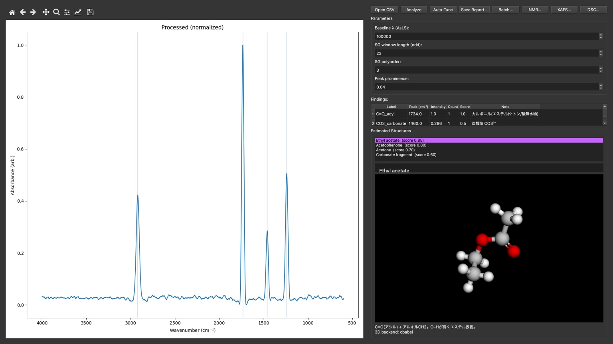

重要なお知らせ（開発中／非製品／個人制作）
- 本ページで紹介する「Analysiscopilot」は開発中の個人プロジェクトであり、製品版ではありません。
- 機能・仕様は予告なく変更／停止される場合があります。研究・教育目的での試用を想定し、いかなる保証も提供しません。
- 利用は自己責任でお願いします。
ORCA 等の外部ソフトの利用に関する注意：本サイトの説明で触れる ORCA は、**個人の趣味・学習の範囲**を前提に記載しています。商用・業務利用については各ソフトウェアのライセンス条件をご確認のうえ、必要に応じて**別途のライセンス契約**をご手配ください。
スクリーンショット

IR：ベースライン補正・平滑・ピーク検出・推定構造イメージ（試作 UI）
NMR：ピークテーブル・多重度・一次解釈メモ（試作 UI）
XAFS：エッジ推定と配位モチーフ表示（試作 UI）
概要
- 前処理：ベースライン補正、平滑化、範囲トリム、正規化
- ピーク処理：ピーク検出、ピーク表（位置・強度・幅）
- 相関：IR Δν–NMR 化学シフトの散布図／オーバーレイ（開発中）
- 出力：高解像度グラフ、CSV、PPT/PDF 草案
使い方（3分）
- CSV（IR/NMR/XAFS/DSC）を投入
- 右側に条件メタデータ（試料・溶媒・温度など）を入力
- 「出力」で図・表・要旨テンプレを一括生成